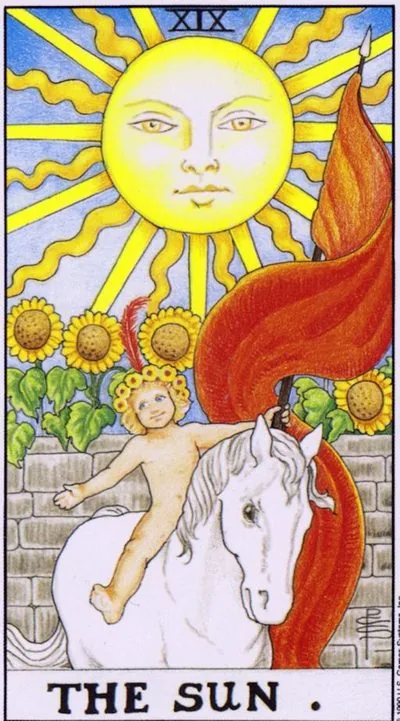

Major Arcana · XIX
XIXThe Sun
Noon without clouds: life force, success and joy you don’t need to deserve.
Archetype and core meaning
The sun is the kindest card of the deck: a child on a white horse, sunflowers above the wall, a light that has nothing to prove, and all life reaches to it not for a reward, but because it is so arranged.
In the scenario, it announces a fruiting period, and success is not a lottery, but the natural outcome of what grew quietly and long, and clarity replaces guesswork: you can see far away, both the road and yourself in it.
Arcana reminds us of the main source: joy does not reside in achievement, but in the ability to shine. The child on the card is happy not because he won, he does not participate in the competition at all.
Daily life
Day with open windows: things get along, people smile, the body asks for movement and air. Spend time in the sun, with children, in a game without purpose. Home affairs are solved easily - even prolonged repairs argue. Allow yourself pleasure without benefit: just joy is also the case.
Work and career
The recognition band: the project is successful, the leadership is good, your name sounds louder. The card is public — presentations, talks and interviews are brilliant. It's a good time to start your business, expand, take a responsible role. Energy is restored faster than it's spent: it's on the rise.
Relationships
Relationships in the best possible form: warmth for no reason, laughter for small things, the desire to show the loved one to the world. For couples waiting for a addition, the card is traditionally favorable — it carries childish energy in the literal sense. Solitude is not a problem now, but a pause in the sun: dating happens easily and without strategy. Love openly — today it is safe.
Health
One of the best health cards is strength, immunity is strong, treatment is quick, especially good for children and anyone who recovers from illness, sunshine, sports, active rest, the body asks for movement. One thing is caution: even the sun shines rhythmically, beware of overheating and overload.
Spiritual meaning
The sun is a lark of light initiation: joy as a spiritual technique, not a reward for austerity. In practice, a card is used to charge amulets of luck, strengthen vitality and protect children. Sunlight meditation warms the energy pillar from bottom to top.
The sun is behind the haze: success is not canceled, but delayed, and joy must be awakened.
Archetype and core meaning
The sun upside down is the same afternoon seen from the smoke-filled room, and it's okay, the lights are still there, but between you, the curtain is fatigue, resentment, perpetual busyness.
The card describes a muffled joy: there is achievement, and you don't want to celebrate; love is nearby, but you feel it through strength. Sometimes it's just a delay: success comes later than deadline, recognition comes after an extra lap.
There is a shadowy line, childishness, turned the wrong side: whims, demanding everything at once, an ego waiting for applause without work, or the burnout of someone who shone everyone and forgot to pay himself.
Daily life
Half-hearted day: everything works, but without taste; the sun shines, and not enough heat. Don't make yourself happy, remove from the day extra, will remain the main thing. Help someone in small things: someone else's smile often turns yours. Go to bed early - many "gray days" are banal lack of sleep.
Work and career
The work is going on, but the recognition is late: there are results, there are no awards and no praise - the registration of your merits moves slower than desired. Don't force: the card promises that success will come later. The more dangerous is star disease or overload for the sake of applause.
Relationships
Feelings are alive, but they're muted: life ate romance, couples love "from memory." Sometimes the card is about the inner child: someone in the union once lost warmth and now asks for it clumsily. Bring back play and stupidity in the relationship - they cure better than serious conversations. Single: first joy for yourself, then finding a partner.
Health
Energy is below normal: lethargy, decreased immunity, "I'm not sick, but I'm not living"; the reasons are more often regimen: little light, movement and real rest; walking in daylight hours and vitamins prescribed by a doctor are literally necessary; burnout is treated only by real rest, not by imitation.
Spiritual meaning
An inverted arcana speaks of a closed solar channel: power flows, but in a subtle trickle. The practice of luck works half-heartedly — first restore the resource, then recharge the talismans. Sometimes it is a sign of children's programs: the inner child is waiting for permission to shine. Meditation in the morning sun, play, creativity without a judge returns the connection. The lights were not turned off — just forgot to open the curtains.
🌿 In brief
The main idea
The sun is the direct light of consciousness. Unlike the moon, it doesn't reflect anything. The light comes directly and allows us to see what's happening openly.
How it manifests
Childhood, naturalness, pleasure in life, the ability to do what you really like.
Work.
Creativity, free activity, patronage, patronage.
In a relationship
Children, parents, care, offspring.
The shadow side
Childish spontaneity becomes irresponsibility, and the person trusts authority too much or expects someone to always provide it.
Feature of the school
The Sun is connected to the XII House, Jupiter and Neptune, and the Sun is the person who allows something bigger to manifest through himself.
📜 In detail — lecture extracts
Essence of the card
The sun was “consciousness shining,” direct light against the reflected moon. Man is the vehicle of divine consciousness: through people, “like small thin rays,” light pours out onto the earth; people live life to become aware of it, becoming part of the consciousness of God (“transition from the manifested light of this world to the light of the world to come”). The core of the card is protection under the supervision of the divine father: the child does what is in it, believing that he will be looked after. Astrologically, the card in his 12th house: Neptune is the master, but the significant aspects are carried by Jupiter, the protector.
Upright position
Values are arranged in four elements (standard for dividing consultations).
The general range: childishness, joy, enjoyment of life; doing what you want and what you are supposed to do without worrying about your income. White = honesty and good thoughts; child nudity = complete sincerity - nakedness in cards always means sincere manifestation. Work/society: spontaneity is sincere behavior: a person does business because he likes it, and people appreciate it. patron card: client “do-do-do, I will pay as much as necessary”, master is free from worries about money and creates (for example, a familiar blacksmith from Minsk). Finance: patronage and patronage. Sponsor gives money to earn money, it's not the Sun; the Sun is closer to the patron: "God looks at us and just gives, asking nothing in return." Card advice: the artist to hire a manager, not to think with money; here grants. Here inheritance falls rarely — it goes on the moon (a gift of the mother goddess) and the Chariot (a gift of the gods, gift by kind). Self-development: creativity as the creation of something that is not yet in the world; inspiration-inspiration, "God creates with our hands." If the coach has indicated the direction, it is more of a Hierophant; the Sun - you feel where to direct the light through yourself. Relationships: parents and children are the main thing; a card that hints at offspring: often falls on a woman's desire to have a child, although the symbol itself is male; one partner's concern for the other: one partner is less pragmatic and lives happily, the other takes care of the welfare; traditionally, a man looks after a woman - "married as a stone wall." The principle of parenting is the right distance: to look after without interfering with games; "the more often a child falls, the sooner he learns to stand up, help him, not to fall."
Negative meaning
- Cons are woven into the analysis of values under the formulas "if the card is negative ...", "by negative value":
- - work: irresponsibility; designer with burning eyes chases emotions and does not think about whether it is convenient to live - "designer repair" like a brute; the child jumps with his eyes closed, catching a high, went too deep into the 12th house and forgot about the practical 6th;
- excessive patronage: the sun is dipping over the employee – it came too close, it became hot, not before work;
- Childish: desires go too far - we do not understand what we will have to pay for; blind trust in authority, naive trust; we use what is happening without thinking about the future;
- Relationships: partner demands to provide ("I am so beautiful - you will provide for me, and I will just love you and do nothing"); client underestimates a man or a lazy person sits at a football with beer with his wife at two jobs; "any kind of alphonse and contents";
- The professor in Interstellar is the sun in the negative: he took the courage to decide for everyone, led people by deception ("I know the answer"), even though he did not believe.
School emphases and distinctive points
- Not the Lion or the 5th house: "the great temptation to push in," but Tarot and astrology are not identical. Links: Force (VIII) carries aspects of the Sun; the Devil (9th house) has Jupiter in charge, here it is the background; quote about the renewed mind leading to inner harmony - a hint of the cards ahead.
- The 12th house: secrets, solitude, monasteries, mental hospitals, long voyages, esotericism; the reflected light of the intellect passed on the moon and Aquarius, here is the true light of the senses. The antithesis of the 6th house: there is material loneliness, there is "one, but you are being looked after." Virgos see the incomprehensible as karma ("religious pessimists"), Pisces - "God's ways are inscrutable, all for the better" (" Religious optimists "Whose are given - you do not go to church, God feels in yourself. The theory "the world is a dream of God").
- - Aegis: Father god Zeus=Jupiter=One, the image of a father since childhood; a cape made of the skin of Amalfea or chthonic snake, Athena - with the head of the Gorgon (Magic); "under the auspices of the UN." The wall on the card is the same protection: Jupiter intercepts space debris into the Kuiper belt; the secret Renaissance garden, backyard/front yard; the safest in sight of all.
- The red banner is not blood: the color of life, the fire, the desire to live and move forward.
- Sunflowers: follow the sun - devotion, unlike the two-faced moon; the grass of revelation; in Christianity, a sign of God's love and obedience; van Dyck's self-portrait - worship of the patron Charles I.
- - Unicorn instead of white horse: eternal youth, can be caught only next to children (parental affection); pure thoughts to see; Diana/Artemis deer (bridge to the moon); light forces against chthoni; Christian Christ (fish), unity of opposites; alchemical "white deed" Pisces-yin-yang: two fish, the struggle of light and darkness inside (diet vs bucket of ice cream).
- - Creators: a real artist is hungry; Dali + Gala is a guardian angel, muse and manager (after her death he did not create, did not tolerate sunlight); Picasso “does a craft”, Safronov – earnings, not creativity.
- - Cinema: Dumbledore (helps the unnoticed), Interstellar, The Truman Show (the director is not the devil, but the good deity of the fence), Shyamalan's Signs (faith, corn-thon, puzzle of fate); Tiger on the sunflower - a circle of care.
- - To the question of the chat about the horseman of the Apocalypse: "to pull the owl on the globe", common only horse and flag; 12th house - the death of the material world and the beginning of the spiritual. Ahead of the Judgment and the World (carried out beyond the wheel of the Zodiac), Banzkhaf is not quoted; there is no Slavic series at the lecture.
Keywords
- consciousness · supervision from above · patronage · patronage · immediacy · sincerity · creativity without order · the right distance · under the auspices · child / offspring
- ---